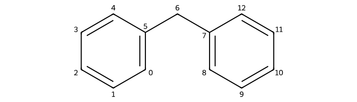
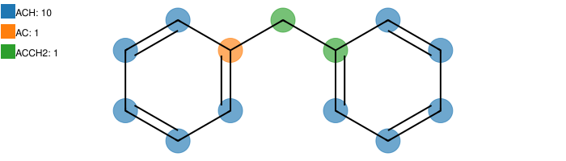

Getting started
Installation
To install the last version of ugropy uploaded to PyPI simply do:
pip install ugropy
If you are working on a google colab use:
%pip install ugropy
If you are a developer who wants to contribute to ugropy, you can install it in development mode by cloning the repository and running:
pip install -e .
Citing ugropy
If you use ugropy in your research, please cite the following article:
@article{brandolin2025ugropy,
title={Ugropy: An Extensible Python Package for Thermodynamic Model Functional Group Identification via Mathematical Optimization},
author={Brandol{\'\i}n, Salvador E and Benelli, Federico E and Magario, Ivana and Scilipoti, Jos{\'e} A},
journal={Industrial \& Engineering Chemistry Research},
volume={64},
number={35},
pages={17217--17227},
year={2025},
publisher={ACS Publications},
doi = {10.1021/acs.iecr.5c02552}
}
About the algorithm
First, ugropy’s algorithm relies on three major dependency libraries:
RDKit: for handling chemical structures and performing substructure searches.
PuLP: for formulating and solving the integer optimization problems.
PubChemPy: for retrieving chemical information (SMILES) from the PubChem database.
Without the capabilities of these libraries, ugropy would not be able to perform its core functions effectively. RDKit allows for efficient manipulation of chemical structures, while PuLP provides a powerful framework for solving the optimization problems that arise in functional group identification. PubChemPy enables access to SMILES strings from the molecules’ names.
ugropy’s algorithm is based on the concept of fragmentation, which involves selecting a set of fragments (functional groups) that can be used to represent the molecule from a list of structures.
The RDKit library is used to perform substructure searches, for example, let’s imagine that we have a very simple fragmentation model that only detects the presence of methyl (CH3) and ethyl (CH2) fragments.
[1]:
from rdkit import Chem
# Definition of the fragments of our model
ch3 = Chem.MolFromSmarts("[CX4H3]")
ch2 = Chem.MolFromSmarts("[CX4H2]")
In the majority of fragmentation models, we usually have to specify which fragments are used to represent a molecule and the number of times that fragments are present in the molecule. For example, if we want to fragment the n-hexane molecule with our simple fragmentation model, we can simply do it with the RDKit library as follows:
[2]:
# Molecule to fragment
hexane = Chem.MolFromSmiles("CCCCCC")
[3]:
ch3_detections = hexane.GetSubstructMatches(ch3)
ch3_detections
[3]:
((0,), (5,))
[4]:
ch2_detections = hexane.GetSubstructMatches(ch2)
ch2_detections
[4]:
((1,), (2,), (3,), (4,))
RDKit is returning a tuple of tuples for each fragment, where each inner tuple contains the indices of the atoms that match the fragment. The length of the outer tuple indicates how many times the fragment is present in the molecule. In this case, we have 2 methyl groups and 4 ethyl groups in the n-hexane molecule. For that we can directly build a dictionary that represents the result of the n-hexane fragmentation with our simple model:
[5]:
solution = {
"CH3": len(ch3_detections),
"CH2": len(ch2_detections),
}
solution
[5]:
{'CH3': 2, 'CH2': 4}
This simple molecule with this simple fragmentation model was the start of the development of ugropy:
"Well... now we just need to add all the fragments of a model like UNIFAC,
make a direct detection with RDKit for each one and that's all... right?".
Well, no. The problem is that some fragments can overlap on the molecule’s atoms when performing a direct detection. Let’s check the following example:
[6]:
from rdkit import Chem
from rdkit.Chem.Draw import rdMolDraw2D
from IPython.display import SVG
mol = Chem.MolFromSmiles("c1ccccc1Cc2ccccc2")
drawer = rdMolDraw2D.MolDraw2DSVG(700, 200)
opts = drawer.drawOptions()
opts.addAtomIndices = True
drawer.DrawMolecule(mol)
drawer.FinishDrawing()
SVG(drawer.GetDrawingText())
[6]:

In many fragmentation models like UNIFAC, there are fragments to differentiate between aliphatic and aromatic carbons. Let’s imagine the following fragmentation model:
[7]:
# Definition of the fragments of our model
# Aliphatic CH2
ch2 = Chem.MolFromSmarts("[CX4H2]")
# Aromatic CH
ach = Chem.MolFromSmarts("[cH]")
# Aromatic C without H
ac = Chem.MolFromSmarts("[cH0]")
# Aromatic C bonded with aliphatic CH2
acch2 = Chem.MolFromSmarts("[cH0][CX4H2]")
# List of fragments of our model
fragments = [ch2, ach, ac, acch2]
fragments_names = ["CH2", "ACH", "AC", "ACCH2"]
Let’s analyze the molecule with our model doing a direct detection with RDKit:
[8]:
mol = Chem.MolFromSmiles("c1ccccc1Cc2ccccc2")
occurrences = {}
print("====================================================================")
print("Atoms occupied by each fragment:")
print("--------------------------------------------------------------------")
for fragment, name in zip(fragments, fragments_names):
detections = mol.GetSubstructMatches(fragment)
print(f"{name}: {detections}")
occurrences[name] = len(detections)
print("\n====================================================================")
print("Occurrence of each fragment:")
print("--------------------------------------------------------------------")
print(occurrences)
====================================================================
Atoms occupied by each fragment:
--------------------------------------------------------------------
CH2: ((6,),)
ACH: ((0,), (1,), (2,), (3,), (4,), (8,), (9,), (10,), (11,), (12,))
AC: ((5,), (7,))
ACCH2: ((5, 6), (7, 6))
====================================================================
Occurrence of each fragment:
--------------------------------------------------------------------
{'CH2': 1, 'ACH': 10, 'AC': 2, 'ACCH2': 2}
Anyone with some experience with the UNIFAC model will know that the correct fragmentation for this molecule is:
{'ACH': 10, 'AC': 1, 'ACCH2': 1}
You may notice that the direct detection of ACCH2 fragment is getting two detections. Moreover, the direct detection of AC, ACCH2 and CH2 are overlapping in the same three atoms of the molecule.
The ugropy’s algorithm creates an integer (binary) optimization to solve this decision problem of which fragments use to occupy the atoms that present overlaps. This mathematical optimization problem is called a Set Cover Problem, and it is solved with the PuLP library.
For more details about the algorithm, please refer to the ugropy’s article:
@article{brandolin2025ugropy,
title={Ugropy: An Extensible Python Package for Thermodynamic Model Functional Group Identification via Mathematical Optimization},
author={Brandol{\'\i}n, Salvador E and Benelli, Federico E and Magario, Ivana and Scilipoti, Jos{\'e} A},
journal={Industrial \& Engineering Chemistry Research},
volume={64},
number={35},
pages={17217--17227},
year={2025},
publisher={ACS Publications},
doi = {10.1021/acs.iecr.5c02552}
}
Now, let’s use ugropy to obtain the correct fragmentation of the molecule with the UNIFAC model.
[9]:
from ugropy import unifac
solution = unifac.get_groups("c1ccccc1Cc2ccccc2", "smiles")
solution.subgroups
[9]:
{'ACH': 10, 'AC': 1, 'ACCH2': 1}
[10]:
solution.draw(width=700)
[10]:
